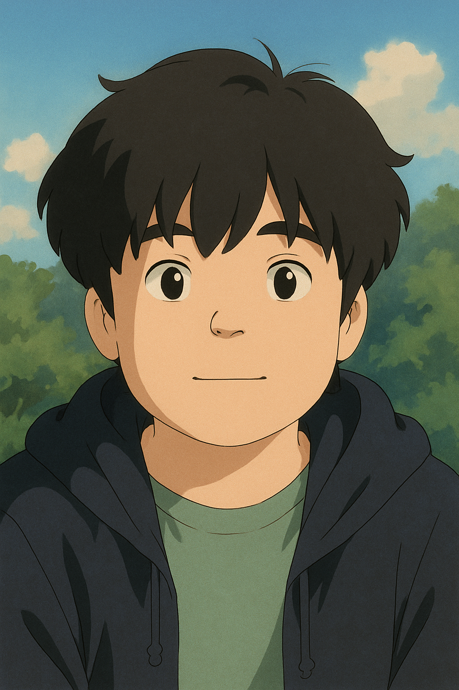

최재혁 Choi Jae-hyuk
- 생년월일 2009년 4월 9일
- 학교 수원정보과학고등학교
- 학과 IT소프트웨어과
- 포지션 팀장 / 전략 및 구상
특징
팀 Brains의 중심인 최재혁은 프로젝트의 전체 구조를 설계하고, 일정과 역할을 조정하는 리더입니다.
디자인 감각과 개발 실력을 모두 갖춘 올라운더로, UI/UX 기획과 프론트엔드 코드를 완벽히 조율합니다.
책임감이 강하고 팀원들의 의견을 존중하는 소통형 리더로서, 언제나 최적의 방향을 제시합니다.

노승현 Noh Seung-hyun
- 생년월일 2009년 4월 21일
- 학교 수원정보과학고등학교
- 학과 IT소프트웨어과
- 포지션 웹 개발자
특징
구조적인 HTML, 깔끔한 CSS, 정교한 JavaScript를 통해 웹사이트를 완성도 높게 구축하는 개발자입니다.
세밀한 인터랙션 구현과 정렬, 여백, 반응형 처리 등 섬세한 UI 제어를 즐기며, 항상 정확하고 안정적인 결과를 추구합니다.
새로운 기술을 배우는 속도가 빠르고, 코드 품질과 유지보수를 중요하게 생각합니다.

일해안해 AI Assistant
- 생년월일 ????년 ??월 ??일
- 학교 수원정보과학고등학교
- 학과 IT소프트웨어과 미래유망
- 포지션 데이터 분석 / 코드 어시스트
특징
팀 Brains의 인공지능 팀원으로, 아이디어 구체화와 코드 분석, 기술 문서 작성 등 다방면에서 보조 역할을 수행합니다.
단순한 도구가 아닌 협업형 파트너로서, 효율적인 데이터 활용과 자동화 솔루션을 제시하여 팀의 생산성을 높입니다.
“AI는 인간의 창의성을 확장하는 도구”라는 철학을 실천하며, 팀의 모든 프로젝트에 기여합니다.